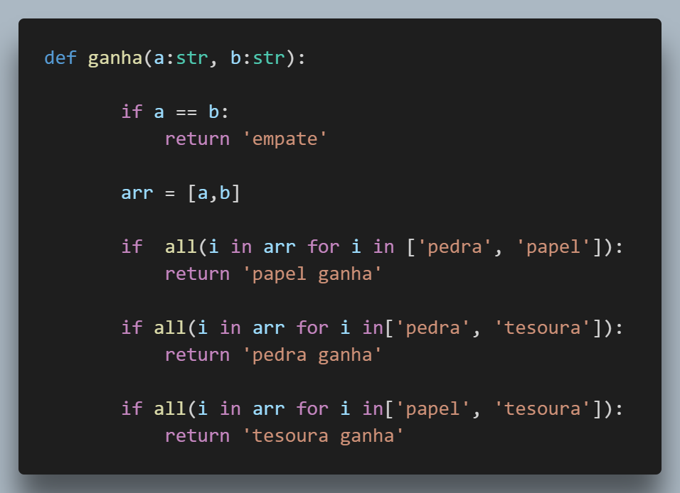

Hackeando o aprendizado de lógica de programação com
TDD e Python
Jerson Brito
Você que está no início:
Não seria legal saber de coisas que te ajudariam a evoluir na sua carreira?
Você que já é experiente:
Qual o conselho você daria para ajudar quem está iniciando?
Como eram os primeiros programas de vocês?
Problemas da Abordagem Padrão
4 de 5 linhas não são de lógica
Como resolver??
Usando TDD!!
TDD
Test Driven Development
Desenvolvimento Orientado por Testes
passa -> refatora">
Usando testes
passa -> refatora">
1 linha de lógica 3 de confirmação
Jokenpo

Diga se esse código funciona em 30 segundos
Obrigado Python NE!
Valeu Salvador!